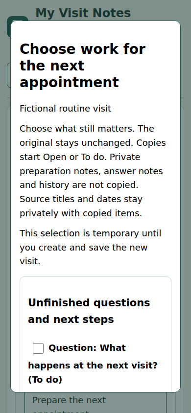
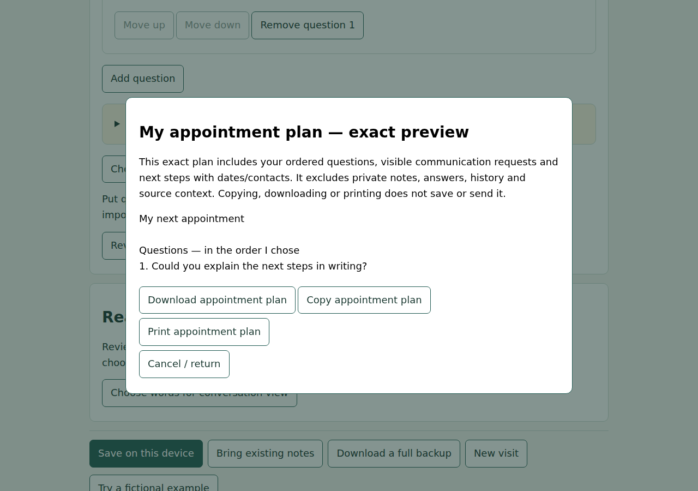

1 / 12 · The decision
Connect one appointment to the next
Let someone bring forward what still matters, change their words, choose what to discuss first and prepare a short plan. Keep the earlier visit unchanged.
Speaker notes
The previous app already had copying and saving tools. This goal connects them through a next-appointment entry, deliberate selection, exact plan review and source inspection. It is an engineering response to a verified gap in the interface, not proof of demand.
2 / 12 · The journey
Choose, edit, review, save, return and use
Start from a saved visit. Select questions, next steps and communication requests. Create an independent temporary visit, edit it and review the exact plan. Save successfully before closing. Return offline after setup and choose what to show during the appointment.
Speaker notes
There is one visit format, not another planning record to manage. Existing backup, transfer, conversation and after-visit tools continue to work. A selection dialog is temporary; only confirmed saved visits have the later-return promise.
3 / 12 · Deliberate selection
Nothing is brought forward without a choice
Unfinished questions and next steps appear first. Answered or closed items are inside a separate disclosure. Communication requests need their own selection. A person can start fresh if nothing should carry over.

Speaker notes
Showing a list is not consent to copy it. Closed items may still matter to someone, so they can be deliberately revealed. Reopening an answered question in a new appointment must not erase the answer in its original visit.
4 / 12 · Independent copies
Keep the earlier notes intact
New question copies start Open; next steps start To do. They have new identities. Private preparation notes, personal answers and follow-up history do not copy into the plan. Selected source dates and contacts remain available for editing.
Speaker notes
Source titles and dates stay privately with copied items so someone can understand their context. Downloading the short appointment plan excludes that source context. Full private backups have a different scope and need private storage.
5 / 12 · Your order
Put the question you want first at the top
Edit old wording, add new concerns and use Move up or Move down. Add an optional title and appointment date. Choose and edit communication needs in What helps. The app does not decide what is medically important.
Speaker notes
The question order expresses the person’s choice, not a clinical ranking. There are no automatic summaries or rewritten concerns. Keep exact line breaks and literal characters so the person can recognize their own words.
6 / 12 · Exact preview
Know what the short plan contains
Review my appointment plan shows ordered questions, visible communication requests and next steps with dates and contacts. It excludes private notes, answers, history and source context. Copy, download and print use this same preview.

Speaker notes
Exporting is not saving, sending or recording contact. The short plan is useful outside the app but is not a complete recovery backup. Failed clipboard access offers downloading instead. Printing checks inspect browser content; no physical printer result is claimed.
7 / 12 · Save and return
A successful save is the boundary
The new appointment stays temporary until explicit save consent. Later visit edits save automatically when storage works. Read the status before closing. Saved plans can reopen after a complete browser restart and offline once setup is ready.
Speaker notes
Browser data can be cleared or become unavailable; there is no server recovery. The working plan remains downloadable when saving fails, including when saved storage becomes unreadable. Private full backups retain more than the short plan.
8 / 12 · Changed sources
Stop before copying an outdated selection
If the source changes or disappears while someone is choosing, confirmation is blocked. The preview remains available. Reviewing the latest source starts fresh choices. Cancelling leaves the current open visit alone.
Speaker notes
Do not quietly adopt changed source wording after consent was given for different words. Protect open unsaved work with an explicit replacement warning. A repeated confirmation must not create repeated records.
9 / 12 · Source inspection
Show context without opening private answers
Where this item came from shows captured title/date and, if available, the current source wording and state. It is read-only and does not replace the open appointment. If the source is missing, no similar item is substituted.
Speaker notes
The app does not retain an exact historic quotation of the original question in the source reference. Label inspected wording as current. Explicitly missing transfer mappings must not fall back to an unrelated local record with the same identifier.
10 / 12 · Another browser
Carry the plan and its source together
Private device transfer can carry both appointments. Review before importing. Different returned versions stay separate, and copied items refer to the source version that travelled with them. The sending browser is not silently changed.
Speaker notes
There is no automatic syncing. The transfer file is unencrypted. The two-browser test changes a source on the receiving side, returns it, and checks that the original sender version remains alongside the correctly linked returned copy.
11 / 12 · Evidence
Check the complete second appointment
13 of 13 recorded next-appointment browser scenarios passed. They include conversation, interruption, later notes, full offline restart, transfer return, source loss, storage failure, keyboard use and long-text layouts.
- NA01 — Choose deliberately, preview, edit independent copies and download the exact private-safe plan: passed
- NA02 — Source edits and deletion invalidate confirmation without replacing the open visit: passed
- NA03 — Cancellation preserves unsaved open words and chosen work never writes by itself: passed
- NA04 — Source inspection is read-only, survives a missing source, and excludes private notes: passed
- NA05 — Saved plan returns offline with exact order and communication needs; narrow preview fits: passed
- NA06 — Two appointments through conversation, interruption, answers and remaining work preserve the original: passed
- NA07 — Full browser restart offline preserves the new plan and source inspection: passed
- NA08 — Isolated-browser transfer preserves the plan and a differing returned source maps to its own version: passed
- NA09 — Failed saving keeps the plan available and export works even if storage becomes unreadable: passed
- NA10 — Empty library, closed-item disclosure and blank plans have deliberate paths: passed
- NA11 — Another tab invalidates source choices while preserving the selected preview: passed
- NA12 — Keyboard choices, literal long text, enlarged layout and screenshots retain privacy: passed
- NA13 — Reordering resets the saved starting question and conversation begins with the chosen first question: passed
Recorded 2026-09-16T21:53:36.374Z. Results and tested source files.
Speaker notes
The full regression and extracted-package checks remain separate gates. Read the acceptance audit for current approval. Fictional journeys explain behavior; they are not invented participant findings or evidence of usefulness.
12 / 12 · Delivery and limits
One connected web-app journey
The delivery includes detailed requirements, twelve fictional journeys, this briefing with speaker notes, help, test reports and a checked download once the release audit passes. Use the same app on desktop and mobile browsers.
Speaker notes
Native Android and iOS packaging remains a later decision. Physical-phone behavior, screen-reader usability and user benefit are not established by these software checks. There are no accounts, automatic sending, appointment scheduling or medical advice.